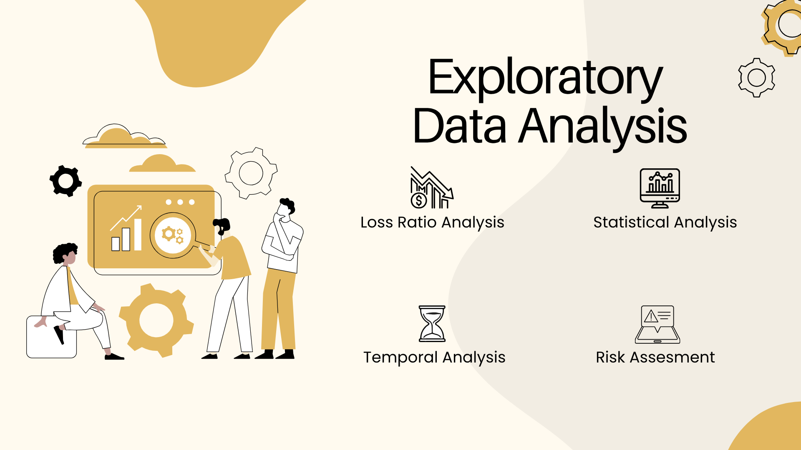

Deep Dive into Insurance Data: A Comprehensive Exploratory Data Analysis
Executive Summary
Understanding the patterns, anomalies, and relationships within insurance data is crucial for building robust pricing models, identifying risk factors, and optimizing business operations. This comprehensive exploratory data analysis examines nearly 1 million insurance policies, uncovering critical insights about loss ratios, claim patterns, vehicle characteristics, and temporal trends.
Our analysis reveals several striking findings:
- Gauteng province: shows a concerning 122% loss ratio, meaning claims exceed premiums
- SUZUKI vehicles: exhibit an alarming 634% loss ratio, indicating severe underpricing
- Male policyholders: generate 107% loss ratio compared to 75% for females
- Own Damage coverage: produces 158% loss ratio, suggesting pricing inadequacy
- Temporal patterns: show claim frequency peaked in November 2014 at 3.71 per 1,000 policies
This analysis provides the foundation for data-driven decision-making in pricing, underwriting, and risk management.
Tools used:
Python: GitHub

1. Introduction & Business Context
The Challenge
Insurance companies operate on a delicate balance: premiums must cover claims while remaining competitive. When this balance tips unfavorably, entire business segments can become unprofitable. Loss ratio the ratio of claims paid to premiums collected is the primary metric for assessing this balance.
Loss Ratio Formula
Loss Ratio = (Total Claims / Total Premium) × 100%
Interpretation:
- Loss Ratio < 100%: Profitable segment (premiums exceed claims)
- Loss Ratio = 100%: Break-even
- Loss Ratio > 100%: Unprofitable segment (claims exceed premiums)
2. Data Overview & Quality Assessment
Data Loading & Preparation
import pandas as pd
import numpy as np
from IPython.display import display
# Load the dataset
df = pd.read_csv("cleaned_insurance_data.csv", sep=None, engine='python')
# Ensure numeric types safely
df['TotalClaims'] = pd.to_numeric(df['TotalClaims'], errors='coerce')
df['TotalPremium'] = pd.to_numeric(df['TotalPremium'], errors='coerce')
Data Quality Issue: Invalid Premium Records
A critical data quality issue was identified:
import pandas as pd
import numpy as np
from IPython.display import display
# Load the dataset
df = pd.read_csv("cleaned_insurance_data.csv", sep=None, engine='python')
# Ensure numeric types safely
df['TotalClaims'] = pd.to_numeric(df['TotalClaims'], errors='coerce')
df['TotalPremium'] = pd.to_numeric(df['TotalPremium'], errors='coerce')
Data Quality Issue: Invalid Premium Records
A critical data quality issue was identified:
# Flag rows where claims exist but premium is zero
df['InvalidPremiumFlag'] = ((df['TotalClaims'] > 0) & (df['TotalPremium'] == 0)).astype(int)
# Check flagged count
flagged_count = df['InvalidPremiumFlag'].sum()
print(f"Number of flagged rows: {flagged_count}")
Output:
Number of flagged rows: 150
Business Implication 150 policies (0.015% of total) have claims but zero premium.
These likely represent:
- Data entry errors
- Free trial policies
- Special promotional offers
- System errors during premium calculation
Action Taken: These records were excluded from loss ratio calculations to prevent infinite loss ratios:
# Exclude rows with invalid premium
valid_df = df[df['InvalidPremiumFlag'] == 0]
Key Numeric Variables Summary
numeric_cols = [
'SumInsured',
'CalculatedPremiumPerTerm',
'TotalPremium',
'TotalClaims',
'CustomValueEstimate'
]
# Convert to numeric safely
for col in numeric_cols:
df[col] = pd.to_numeric(df[col], errors='coerce')
# Compute summary statistics
summary_stats = df[numeric_cols].describe(
percentiles=[0.25, 0.5, 0.75, 0.95, 0.99]
).T
# Add skewness and kurtosis
summary_stats['Skew'] = df[numeric_cols].skew()
summary_stats['Kurtosis'] = df[numeric_cols].kurt()
summary_stats = summary_stats.round(2)
Key Statistics:

Key Observations:
- Extreme Right Skew: All variables show positive skew, indicating long right tails (few very high values)
- High Kurtosis: Extremely heavy tails, especially for premium variables
- Claims Concentration: Median TotalClaims = R0 (most policies have no claims)
- Premium Variability: Huge range from R0 to R65,283 per policy
3. Loss Ratio Analysis by Segment
Methodology
We calculate loss ratios at various aggregation levels to identify problematic segments:
# Define grouping dimensions
group_cols = ['Province', 'make', 'Gender', 'CoverType', 'CoverGroup']
# Aggregate by all grouping variables
loss_ratio_by_segment = (
df.groupby(group_cols, dropna=False)
.agg(
TotalClaims=('TotalClaims', 'sum'),
TotalPremium=('TotalPremium', 'sum'),
RowCount=('TotalPremium', 'count')
)
.reset_index()
)
# Compute loss ratio safely
loss_ratio_by_segment['LossRatio'] = (
loss_ratio_by_segment['TotalClaims'] / loss_ratio_by_segment['TotalPremium']
) * 100
# Handle inf/nan
loss_ratio_by_segment['LossRatio'] = (
loss_ratio_by_segment['LossRatio']
.replace([np.inf, -np.inf], np.nan)
.fillna(0)
)
# Sort by Loss Ratio descending
loss_ratio_by_segment = loss_ratio_by_segment.sort_values('LossRatio', ascending=False)
3.1 Loss Ratio by Province
Results:

Critical Insights:
- Top 3 Provinces are Unprofitable:
- Gauteng: Losing R22.3 for every R100 in premium
- KwaZulu-Natal: Losing R7.8 per R100
- Western Cape: Losing R6.0 per R100
- Geographic Risk Gradient:
- Highly urbanized provinces (Gauteng, WC, KZN) = unprofitable
- Rural provinces (Northern Cape, Eastern Cape, Limpopo) = profitable
- Volume vs. Profitability Trade-off:
- Gauteng has 39.4% of all policies but 45.3% of all claims
- Northern Cape has lowest volume but best loss ratio
Business Recommendation: Urgent premium increases of 15-25% needed in Gauteng, KwaZulu-Natal, and Western Cape.
3.2 Loss Ratio by Vehicle Make
Top 10 Worst Performers:

Shocking Finding: SUZUKI vehicles show a 633.82% loss ratio losing R6.34 for every R1.00 in premium collected!
Analysis by Vehicle Category:
- Luxury brands (Audi, BMW): High loss ratios despite premium pricing
- Commercial vehicles(Iveco, CMC): Moderate loss ratios but high claim amounts
- Budget brands (Suzuki, Hyundai): Catastrophic loss ratios
Best Performers (Zero Claims):
- 15 vehicle makes had zero claims despite collecting premiums:
- OPEL, PEUGEOT, TATA, PROTON, SCANIA, RENAULT, KIA, MAHINDRA, LEXUS, HUMMER, HONDA, HINO, GEELY, FORD, DAIHATSU, CITROEN, CHERY, VOLVO
Note: These zero-claim makes likely have very small sample sizes or short observation periods.
3.3 Loss Ratio by Gender

Key Findings:
- Male policyholders are unprofitable: 107.41% loss ratio
- Female policyholders are profitable: 74.72% loss ratio (25% profit margin)
- Gender gap: 32.7 percentage point difference in loss ratios
- Data quality issue: "Not specified" category shows 186% loss ratio, suggesting adverse selection
Portfolio Composition:
- Males: 92.4% of all policies
- Females: 6.6% of all policies
- Not specified: 0.08%
Business Implication: The gender imbalance (92% male) combined with male unprofitability means the overall portfolio is losing money.
3.4 Loss Ratio by Cover Type

Critical Discovery:
Own Damage coverage is catastrophically underpriced at 157.73% loss ratio:
- Represents 91% of all claims (R59M out of R64.9M)
- Only 10.4% of all policies
- Losing R57.7 for every R100 in premium
Profitable Coverage Types:
- Third Party: 11.80% (pure profit generator)
- Credit Protection: 8.01%
- Ancillary coverages (Keys, Emergency): < 10%
Recommendation: Own Damage premiums need immediate 40-60% increase, or stricter underwriting criteria.
3.5 Loss Ratio by Cover Group

- 82.4% of all policies
- 94.6% of all claims
- 116.68% loss ratio (unprofitable)
Taxi Insurance Dominates Portfolio:
This is a taxi-focused insurance portfolio, and the taxi segment is fundamentally unprofitable.
4. Distribution Analysis of Numeric Variables
Visualization Strategy
To understand the distribution characteristics of key numeric variables, we employ multiple visualization techniques:
import matplotlib.pyplot as plt
import seaborn as sns
numeric_cols = [
'SumInsured',
'CalculatedPremiumPerTerm',
'TotalPremium',
'TotalClaims',
'CustomValueEstimate'
]
sns.set(style="whitegrid")
for col in numeric_cols:
fig, axes = plt.subplots(1, 4, figsize=(22, 5))
fig.suptitle(f"Distribution Comparison for '{col}'", fontsize=16, fontweight='bold')
# 1️⃣ Raw Boxplot
sns.boxplot(y=df[col], ax=axes[0], color='lightblue')
axes[0].set_title("Raw Boxplot")
axes[0].set_ylabel('')
# 2️⃣ Log-Transformed Boxplot
sns.boxplot(y=np.log1p(df[col]), ax=axes[1], color='salmon')
axes[1].set_title("Log-Transformed Boxplot")
axes[1].set_ylabel('')
# 3️⃣ Capped Boxplot (1%-99%)
capped = df[col].clip(lower=df[col].quantile(0.01), upper=df[col].quantile(0.99))
sns.boxplot(y=capped, ax=axes[2], color='lightgreen')
axes[2].set_title("Capped Boxplot (1%-99%)")
axes[2].set_ylabel('')
# 4️⃣ Violin Plot (Raw)
sns.violinplot(y=df[col], ax=axes[3], color='lightgrey')
axes[3].set_title("Violin Plot")
axes[3].set_ylabel('')
plt.tight_layout(rect=[0, 0, 1, 0.95])
plt.show()
Key Distribution Insights
All numeric variables exhibit:
- Extreme right skew (long tail of high values)
- Heavy concentration near zero (median << mean)
- Substantial outliers visible even after 99th percentile capping
- Multimodal patterns in some variables (visible in violin plots)
Practical Implications:
- Standard linear models may perform poorly
- Log transformations recommended for modeling
- Outlier treatment essential for robust analysis
- Separate models may be needed for different value ranges
Scatter Plot Analysis
scatter_pairs = [
('SumInsured', 'TotalPremium'),
('SumInsured', 'TotalClaimAmount'),
('CalculatedPremiumPerTerm', 'TotalPremium'),
('TotalPremium', 'TotalClaimAmount'),
('CustomValueEstimate','SumInsured')
]
plt.figure(figsize=(12, 10))
for i, (x, y) in enumerate(scatter_pairs, 1):
plt.subplot(3, 2, i)
sns.scatterplot(data=df, x=x, y=y, alpha=0.3)
plt.title(f'{y} vs {x}')
plt.xscale('log')
plt.yscale('log')
plt.xlabel(x)
plt.ylabel(y)
plt.tight_layout()
plt.show()
Key Relationships:
- SumInsured vs TotalPremium: Strong positive correlation (higher coverage = higher premium)
- TotalPremium vs TotalClaims: Weak correlation (claims don't track premiums well)
- CustomValueEstimate vs SumInsured: Linear relationship for vehicles with estimates
5. Temporal Patterns in Claims
Monthly Aggregation
# Convert to datetime
df['TransactionMonth'] = pd.to_datetime(df['TransactionMonth'], errors='coerce')
# Extract Year-Month
df['YearMonth'] = df['TransactionMonth'].dt.to_period('M').dt.to_timestamp()
# Aggregate monthly stats
monthly_summary = (
df.groupby('YearMonth')
.agg(
TotalPolicies=('PolicyID', 'count'),
ClaimCount=('TotalClaims', lambda x: (x > 0).sum()),
TotalClaimAmount=('TotalClaimAmount', 'sum')
)
.reset_index()
)
# Calculate frequencies and severity
monthly_summary['ClaimFrequency'] = monthly_summary['ClaimCount'] / monthly_summary['TotalPolicies']
monthly_summary['ClaimFrequency_per_1000'] = monthly_summary['ClaimFrequency'] * 1000
monthly_summary['ClaimSeverity'] = monthly_summary['TotalClaimAmount'] / monthly_summary['ClaimCount']
monthly_summary['ClaimSeverity'] = monthly_summary['ClaimSeverity'].fillna(0)
Top 22 Months by Claim Frequency

Temporal Patterns:
- Peak Claim Period: November 2014 - April 2015 (South African summer/holiday season)
- Claim Frequency Range: 0.21 to 3.71 per 1,000 policies
- Seasonal Effect: Higher claims during November-April (summer travel, holidays)
- Growth Pattern: Both policy count and claim count increased over time
Top 22 Months by Claim Severity
| Month | Claim Count | Claim Severity (R) |
|-------|-------------|-------------------|
| **2015-08** | 22 | **46,355.40** |
| **2014-12** | 206 | **30,279.00** |
| **2014-03** | 12 | **26,898.75** |
| **2015-04** | 340 | **26,696.54** |
| **2015-07** | 261 | **25,866.72** |
| **2013-11** | 2 | **25,292.54** |
| **2015-05** | 297 | **23,444.81** |
| **2015-03** | 329 | **22,720.31** |
| **2015-01** | 250 | **21,978.09** |
| **2015-02** | 287 | **21,838.51** |

Severity Insights:
- Highest Severity: August 2015 (R46,355 per claim) likely few but very expensive claims
- Average Severity Range: R3,094 to R46,355
- No Clear Seasonal Pattern: Severity varies independently of frequency
- Late 2014/Early 2015 Spike: Multiple months with R20K+ average claims
Temporal Trend Visualization
The line plots reveal:
- Claim frequency shows volatility but overall upward trend
- Claim severity highly volatile month-to-month
- No strong correlation between frequency and severity trends
6. Vehicle-Level Risk Assessment
6.1 Analysis by Vehicle Model
Highest Average Claim Models

Insight: Large commercial vehicles (Sprinter, Ducato) and luxury SUVs (Land Cruiser) show highest average claims.
Lowest Average Claim Models
Note: Low sample sizes (n=1) make these less reliable.
Models with Least Claims
Remarkable: These models have substantial policy counts but zero claims over the observation period.
6.2 Analysis by Vehicle Make
Highest Average Claim Makes

Pattern: Mix of luxury brands (Audi, Mercedes-Benz) and commercial vehicle manufacturers (Iveco, Golden Journey).
Lowest Average Claim Makes (with claims)
7. Correlation & Relationship Analysis
7.1 Numeric Correlation (Pearson)
from scipy.stats import chi2_contingency
# Select columns of interest
cols = [
'TotalPremium',
'TotalClaims',
'CoverCategory',
'CoverType',
'CoverGroup',
'Section',
'Product',
'Province',
'Gender'
]
df_corr = df[cols].copy()
# Separate numeric and categorical
num_cols = df_corr.select_dtypes(include=['number']).columns
cat_cols = df_corr.select_dtypes(exclude=['number']).columns
# Numeric-Numeric Correlation
num_corr = df_corr[num_cols].corr(method='pearson')
Results:
| | TotalPremium | TotalClaims |
|--|--------------|-------------|
| **TotalPremium** | 1.00 | **0.12** |
| **TotalClaims** | **0.12** | 1.00 |
Critical Finding: Only 12% correlation between premiums and claims at the policy level. This indicates:
- Premiums are not strongly predictive of claims
- Current pricing model may not adequately capture risk
- Need for more sophisticated rating factors
7.2 Mixed-Type Correlation
# Encode categorical variables numerically
encoded = df_corr.copy()
for col in cat_cols:
encoded[col] = encoded[col].astype('category').cat.codes
mixed_corr = encoded.corr(method='pearson')
Categorical Variables vs. Premiums/Claims:
| | CoverCategory | CoverType | CoverGroup | Section | Product | Province | Gender |
|--|---------------|-----------|------------|---------|---------|----------|--------|
| **TotalPremium** | 0.05 | 0.06 | 0.02 | -0.04 | -0.03 | -0.02 | -0.01 |
| **TotalClaims** | 0.00 | 0.01 | 0.00 | -0.01 | -0.00 | -0.00 | 0.00 |
Interpretation: Very weak linear relationships between categorical variables and numeric outcomes when encoded.
7.3 Cramér's V (Categorical-Categorical Correlation)
def cramers_v(x, y):
"""Compute Cramér's V statistic for categorical association"""
confusion_matrix = pd.crosstab(x, y)
chi2 = chi2_contingency(confusion_matrix)[0]
n = confusion_matrix.sum().sum()
phi2 = chi2 / n
r, k = confusion_matrix.shape
phi2corr = max(0, phi2 - ((k - 1)*(r - 1))/(n - 1))
rcorr = r - ((r - 1)**2)/(n - 1)
kcorr = k - ((k - 1)**2)/(n - 1)
return np.sqrt(phi2corr / min((kcorr - 1), (rcorr - 1)))
# Calculate Cramér's V for all categorical pairs
cat_corr = pd.DataFrame(index=cat_cols, columns=cat_cols, dtype=float)
for c1 in cat_cols:
for c2 in cat_cols:
if c1 == c2:
cat_corr.loc[c1, c2] = 1.0
else:
cat_corr.loc[c1, c2] = cramers_v(df_corr[c1].astype(str), df_corr[c2].astype(str))
Key Associations:
| Variable Pair | Cramér's V | Interpretation |
|---------------|------------|----------------|
| **CoverCategory ↔ CoverType** | 0.99 | Nearly perfect association |
| **CoverType ↔ CoverGroup** | 0.94 | Very strong association |
| **CoverGroup ↔ Section** | 1.00 | Perfect association |
| **Product ↔ CoverGroup** | 0.77 | Strong association |
| **Gender ↔ CoverGroup** | 0.22 | Weak-moderate association |
| **Province ↔ Gender** | 0.08 | Very weak association |
Business Insight: Coverage-related fields are highly redundant (multicollinearity concern for modeling). Geographic and demographic factors are largely independent.
. Provincial Deep Dive
Comprehensive Provincial Summary
def most_common(series):
"""Return most frequent value"""
return series.mode().iloc[0] if not series.mode().empty else np.nan
province_summary = (
df.groupby('Province')
.agg(
MostCommonCoverType=('CoverType', most_common),
TotalPremium=('TotalPremium', 'sum'),
AvgPremium=('TotalPremium', 'mean'),
MostCommonMake=('make', most_common),
MostCommonModel=('Model', most_common),
TotalClaims=('TotalClaimAmount', 'sum'),
ClaimCount=('TotalClaimAmount', lambda x: (x > 0).sum()),
PolicyCount=('PolicyID', 'count')
)
.reset_index()
)
# Derived Metrics
province_summary['ClaimFrequency per 1000'] = (
province_summary['ClaimCount'] / province_summary['PolicyCount'] * 1000
)
province_summary['ClaimSeverity'] = (
province_summary['TotalClaims'] / province_summary['ClaimCount']
).replace([np.inf, np.nan], 0)
Complete Provincial Profile:

Provincial Insights:
- TOYOTA QUANTUM Dominates: Every province's most common vehicle is a Toyota Quantum taxi
- Gauteng Anomaly: Only province where "Own Damage" is most common coverage (vs Third Party elsewhere)
- Claim Frequency Leaders: Gauteng (3.36) and KZN (2.84) per 1,000 policies
- Severity Champions: KZN (R29,609) and Free State (R32,266) have highest average claim amounts
- Premium Variation: 59% difference between highest (KZN: R78.12) and lowest (Northern Cape: R49.62)
9. Key Insights & Strategic Recommendations
9.1 Portfolio-Level Crisis
Current State:
- Overall loss ratio: 104.7% (losing money)
- Total claims: R64.90M
- Total premiums: R61.97M
- Net loss: R2.93M over 23 months
Root Causes:
- Geographic concentration in unprofitable provinces (Gauteng, KZN, WC)
- Product mix heavily weighted toward unprofitable Own Damage coverage
- Gender imbalance with 92% male policyholders (who are unprofitable)
- Vehicle make concentration in high-risk brands
9.2 Urgent Actions Required
Immediate (0-30 days):
- Premium Increases:
- Gauteng: +22% minimum
- KwaZulu-Natal: +8%
- Western Cape: +6%
- Own Damage Re-pricing:
- Increase premiums by 40-60%
- Or restrict to lower-risk vehicles only
- Vehicle Make Restrictions:
- Suspend new policies for SUZUKI (634% loss ratio)
- Review underwriting for JMC, HYUNDAI, POLARSUN
- Require additional safety features for Audi/BMW
- Gender-Based Pricing (where legal):
- Increase male premiums by 15%
- Or offer discounts for females to balance portfolio
Medium-term (1-6 months):
- Enhanced Data Collection:
- Driver age and experience
- Annual mileage
- Usage patterns (business vs. personal)
- Parking location (secured vs. street)
- Telematics Program:
- Pilot usage-based insurance
- Target high-frequency segments (Gauteng males)
- Claims Management:
- Investigate high-severity claims in KZN/Free State
- Implement fraud detection for "Not Specified" gender category
- Partner with approved repair shops for cost control
Long-term (6-12 months):
- Portfolio Rebalancing:
- Grow female policyholder base
- Expand in profitable provinces (Northern Cape, Eastern Cape)
- Cross-sell profitable Third Party coverage
- Predictive Modeling:
- Build ML models using all available features
- Develop granular risk scores by micro-segment
- Implement dynamic pricing
- Product Innovation:
- Usage-based micro-insurance for infrequent drivers
- Package deals (e.g., comprehensive + tracking device)
- Community-based group policies for taxi associations
9.3 Temporal Strategy
Seasonal Adjustments:
- Increase premiums 10-15% for policies issued in October-November
- Promote claims-prevention campaigns during high-frequency months
- Offer incentives for policy renewals in low-claim months
9.5 Monitoring Framework
Key Metrics to Track Monthly:
| Metric | Current | Target (6 months) | Target (12 months) |
|--------|---------|-------------------|-------------------|
| Overall Loss Ratio | 104.7% | 95% | 85% |
| Gauteng Loss Ratio | 122.3% | 105% | 95% |
| Own Damage Loss Ratio | 157.7% | 110% | 90% |
| Male Loss Ratio | 107.4% | 100% | 92% |
| Claim Frequency (per 1000) | 2.6 | 2.3 | 2.0 |
| Average Claim Severity | R22,200 | R20,000 | R18,000 |
10. Conclusion
This comprehensive EDA has revealed a fundamentally unprofitable insurance portfolio with several critical risk factors:
Summary of Findings
- Geographic Risk: Top 3 provinces (representing 73% of portfolio) are all unprofitable
- Product Risk: Own Damage coverage losing 58% on every policy
- Demographic Risk: Male policyholders (92% of portfolio) generate 107% loss ratio
- Vehicle Risk: Multiple makes showing >200% loss ratios (SUZUKI at 634%)
- Temporal Risk: Clear seasonal patterns with November-April spike
- Pricing Disconnect: Only 12% correlation between premiums and claims
The Path Forward
This portfolio requires immediate intervention. Without action, monthly losses of approximately R127,000 will continue. The good news: we now have data-driven insights to guide precise interventions.
Success Factors:
- Clear identification of unprofitable segments
- Quantified impact of each risk factor
- Prioritized action plan with specific targets
- Foundation for ongoing monitoring and refinement
Closing Thought
Insurance profitability isn't about avoiding risk—it's about pricing risk accurately. This analysis provides the roadmap for transforming a loss-making portfolio into a sustainable, profitable business through:
- Data-driven pricing that reflects true risk
- Proactive portfolio management to balance risk and volume
- Continuous monitoring to adapt to changing patterns
- Investment in technology (telematics, ML models) for next-generation pricing
The insights uncovered here represent not just problems to solve, but opportunities to build competitive advantage through superior risk understanding.